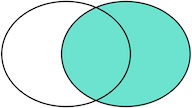

数据库内容复习03-MySql的查询
Mar 4, 2019 00:00 · 2100 words · 5 minute read
复习数据库方面的内容, 以下为笔记内容, 参考了廖雪峰 子查询 子查询 …
预备
CREATE TABLE `classes` (
`id` INT(11) NOT NULL AUTO_INCREMENT,
`name` VARCHAR(100) NOT NULL,
PRIMARY KEY (`id`)
) ENGINE=InnoDB DEFAULT CHARSET=utf8;
CREATE TABLE `students` (
`id` INT(11) NOT NULL AUTO_INCREMENT,
`name` VARCHAR(100) NOT NULL,
`score` DECIMAL NOT NULL,
`gender` CHAR(1) DEFAULT 'M',
`class_id` INT(11),
PRIMARY KEY (`id`)
) ENGINE=InnoDB DEFAULT CHARSET=utf8;
ALTER TABLE `students` ADD CONSTRAINT `FK_students_classes` FOREIGN KEY (`class_id`) REFERENCES `classes` (`id`) ON UPDATE CASCADE ON DELETE CASCADE;
INSERT INTO `classes`(`name`) values('一班'), ('二班'), ('三班'), ('四班');
INSERT INTO `students`(`name`, `score`, `gender`, `class_id`) values
('Tom', 98.5, 'M', 1), ('Abigail', 86.0, 'F', 1), ('Cara', 96.0, 'F', 1), ('Caroline', 60.0, 'M', 1), ('Beryl', 89.5, 'F', 1), ('Brook', 86.0, 'M', 2), ('Ellen', 66.0, 'F', 2), ('Emma', 80.0, 'F', 2),
('Fanny', 50.0, 'F', 3), ('Gail', 80.0, 'M', 3), ('Jodie', 90.0, 'F', 3), ('Nobody', 0.0, 'M', null);
条件查询
SELECT * FROM <表名> WHERE <条件表达式>
常用的条件表达式:
| 条件 | 说明 | 表达式举例 |
|---|---|---|
| = | 判断相等 | score = 80 name = ‘abc’ 字符串需要用单引号括起来 |
| > | 判断大于 | score > 80 name > ‘abc’ 字符串比较根据ASCII码，中文字符比较根据数据库设置 |
| >= | 判断大于或相等 | score >= 80 name >= ‘abc’ |
| < | 判断小于 | score < 80 name <= ‘abc’ |
| <= | 判断小于或相等 | score <= 80 name <= ‘abc’ |
| <> 也可以用 != | 判断不相等(!= 在MySQL中可以使用 不过不是标准的SQL) | score <> 80 name <> ‘abc’ |
| LIKE | 判断相似 | name LIKE ‘ab%’ name LIKE ‘%bc%’ %表示任意字符，例如’ab%‘将匹配’ab’，’abc’，’abcd’ |
基本实例:
-- 查询分数在60分(含)～90分(含)之间的学生可以使用的WHERE语句：
SELECT * FROM students WHERE score >= 60 OR score <= 90;
-- 或者
SELECT * FROM students WHERE score BETWEEN 60 and 90;
-- 指定查询列
SELECT id, name, score from students WHERE SCORE < 60;
-- 排序
select * from students ORDER BY score; -- 升序 "ASC"
select * from students ORDER BY score DESC; -- 倒序
select * from students ORDER BY score DESC, gender; -- 先按score倒序排, 如果有相同的score 按 gender 升序排
-- 分页
select * from students ORDER BY score LIMIT 10 OFFSET 0; -- 每页10条数据, 查询第一页
select * from students ORDER BY score LIMIT 10 OFFSET 10; -- 每页10条数据, 查询第二页
select * from students ORDER BY score LIMIT 10 OFFSET 20; -- 每页10条数据, 查询第三页
-- 备注: 在MySQL中，LIMIT 15 OFFSET 30还可以简写成LIMIT 30, 15
聚合查询
聚合函数:
| 函数 | 说明 |
|---|---|
| SUM | 计算某一列的合计值，该列必须为数值类型 |
| AVG | 计算某一列的平均值，该列必须为数值类型 |
| MAX | 计算某一列的最大值 (如果是字符类型，MAX()和MIN()会返回排序最后和排序最前的字符。) |
| MIN | 计算某一列的最小值 (如果是字符类型，MAX()和MIN()会返回排序最后和排序最前的字符。) |
-- 查询students表一共有多少条记录为例
select COUNT(*) from students;
-- +----------+
-- | count(*) |
-- +----------+
-- | 3 |
-- +----------+
-- 使用别名
select COUNT(*) as total from students;
-- +-------+
-- | total |
-- +-------+
-- | 3 |
-- +-------+
-- 计算平均值
select AVG(score) as average from students;
-- 获得总页数(每页10条数据)
select CEILING(COUNT(*)/10) from students;
分组查询(Group By)
-- 统计每一班学生的总数
SELECT class_id, COUNT(*) as total FROM students GROUP BY class_id;
-- 统计每一班平均分数
select class_id, AVG(score) as average from students GROUP BY class_id;
-- 按性别统计每一班学生数
SELECT class_id, gender, COUNT(*) as total FROM students GROUP BY class_id, gender;
多表查询
-- 笛卡尔查询(结果为数量M*N)
select * from students, classes; -- 结果条数=count(students) * count(classes);
-- 查询结果:
+----+----------+-------+--------+----------+----+------+
| id | name | score | gender | class_id | id | name |
+----+----------+-------+--------+----------+----+------+
| 1 | Tom | 99 | M | 1 | 1 | 一班 |
| 1 | Tom | 99 | M | 1 | 2 | 二班 |
| 1 | Tom | 99 | M | 1 | 3 | 三班 |
| 1 | Tom | 99 | M | 1 | 4 | 四班 |
| 2 | Abigail | 86 | F | 1 | 1 | 一班 |
| 2 | Abigail | 86 | F | 1 | 2 | 二班 |
| 2 | Abigail | 86 | F | 1 | 3 | 三班 |
| 2 | Abigail | 86 | F | 1 | 4 | 四班 |
| 3 | Cara | 96 | F | 1 | 1 | 一班 |
| 3 | Cara | 96 | F | 1 | 2 | 二班 |
| 3 | Cara | 96 | F | 1 | 3 | 三班 |
| 3 | Cara | 96 | F | 1 | 4 | 四班 |
...
...
内联查询(Inner Join)

select s.name, s.score, c.name from students as s inner join classes as c on (s.class_id=c.id);
-- 查询结果
+----------+-------+------+
| name | score | name |
+----------+-------+------+
| Tom | 99 | 一班 |
| Abigail | 86 | 一班 |
| Cara | 96 | 一班 |
| Caroline | 60 | 一班 |
| Beryl | 90 | 一班 |
| Brook | 86 | 二班 |
| Ellen | 66 | 二班 |
| Emma | 80 | 二班 |
| Fanny | 50 | 三班 |
| Gail | 80 | 三班 |
| Jodie | 90 | 三班 |
+----------+-------+------+
左关联查询(Left Join)

select s.name, s.score, c.name from students as s left join classes as c on (s.class_id=c.id);
-- 查询结果
+----------+-------+--------+
| name | score | name |
+----------+-------+--------+
| Tom | 99 | 一班 |
| Abigail | 86 | 一班 |
| Cara | 96 | 一班 |
| Caroline | 60 | 一班 |
| Beryl | 90 | 一班 |
| Brook | 86 | 二班 |
| Ellen | 66 | 二班 |
| Emma | 80 | 二班 |
| Fanny | 50 | 三班 |
| Gail | 80 | 三班 |
| Jodie | 90 | 三班 |
| Nobody | 0 | <null> |
+----------+-------+--------+
右关联查询(Right Join)

select s.name, s.score, c.name from students as s right join classes as c on (s.class_id=c.id);
-- 查询结果
+----------+--------+------+
| name | score | name |
+----------+--------+------+
| Tom | 99 | 一班 |
| Abigail | 86 | 一班 |
| Cara | 96 | 一班 |
| Caroline | 60 | 一班 |
| Beryl | 90 | 一班 |
| Brook | 86 | 二班 |
| Ellen | 66 | 二班 |
| Emma | 80 | 二班 |
| Fanny | 50 | 三班 |
| Gail | 80 | 三班 |
| Jodie | 90 | 三班 |
| <null> | <null> | 四班 |
+----------+--------+------+
全关联查询(Full Join)

注意: mysql 没有 full outer join 可以使用 UNION
-- 在mysql 下执行下面语句会报错
select s.name, s.score, c.name from students as s FULL JOIN classes as c on (s.class_id=c.id);
-- 使用UNION
select s.name, s.score, c.name from students as s LEFT join classes as c on (s.class_id=c.id)
UNION
select s.name, s.score, c.name from students as s RIGHT join classes as c on (s.class_id=c.id);
-- 查询结果
+----------+--------+--------+
| name | score | name |
+----------+--------+--------+
| Tom | 99 | 一班 |
| Abigail | 86 | 一班 |
| Cara | 96 | 一班 |
| Caroline | 60 | 一班 |
| Beryl | 90 | 一班 |
| Brook | 86 | 二班 |
| Ellen | 66 | 二班 |
| Emma | 80 | 二班 |
| Fanny | 50 | 三班 |
| Gail | 80 | 三班 |
| Jodie | 90 | 三班 |
| Nobody | 0 | <null> |
| <null> | <null> | 四班 |
+----------+--------+--------+
练习
-- 统计各班学生数
select c.name, count(s.id) as total from classes as c left join students as s on (c.id=s.class_id) group by c.id;
+------+-------+
| name | total |
+------+-------+
| 一班 | 5 |
| 二班 | 3 |
| 三班 | 3 |
| 四班 | 0 |
+------+-------+
子查询
-- 获取 与 "Emma" 同分数的学生
select id, name from students where score = (select score from students where name="Emma") and name<>"Emma";
+----+------+
| id | name |
+----+------+
| 10 | Gail |
+----+------+
-- exists 查询
-- 统计哪个班至少有一个不及格(<60)的学生
select c.name from classes as c where exists (select * from students as s where s.score < 60 and c.id=s.class_id);
+------+
| name |
+------+
| 三班 |
+------+